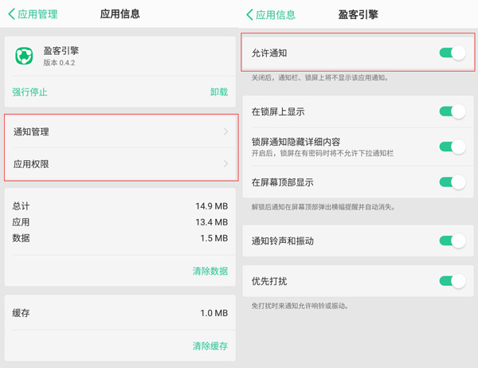

1、打开“设置”,在设置页面选择“通知栏和状态栏”
通知栏和状态栏
2、打开“通知管理”,在列表中找到“盈客引擎”,点击并打开允许通知

1、打开“设置”,在设置页面选择“通知”
通知栏和状态栏
2、在列表中找到“盈客引擎”,点击并打开允许通知

3、如您任无法收到消息推送的话,您可以尝试:
(1)自动启动管理:请将应用加至“手机管家”>“自动启动管理”中的允许列表中;
(2)后台应用保护:请将应用加至“手机管家”>“电池管理”>“后保护应用”中的允许列表中